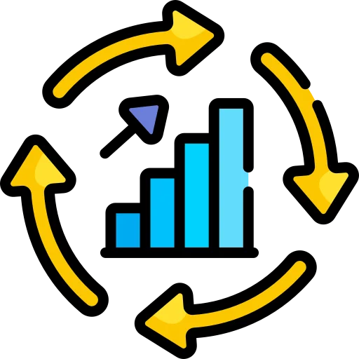
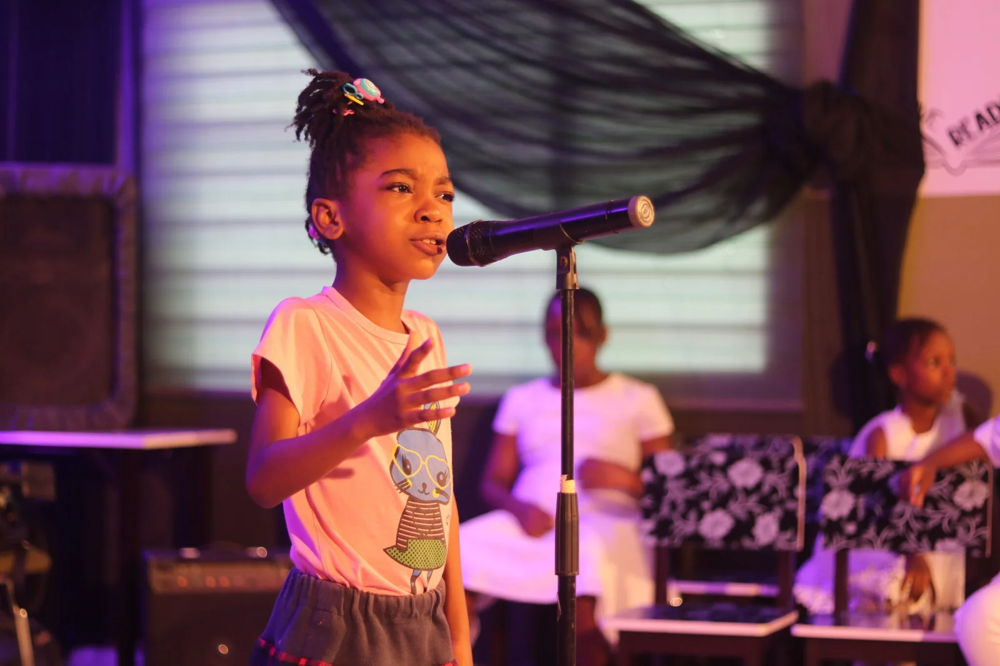
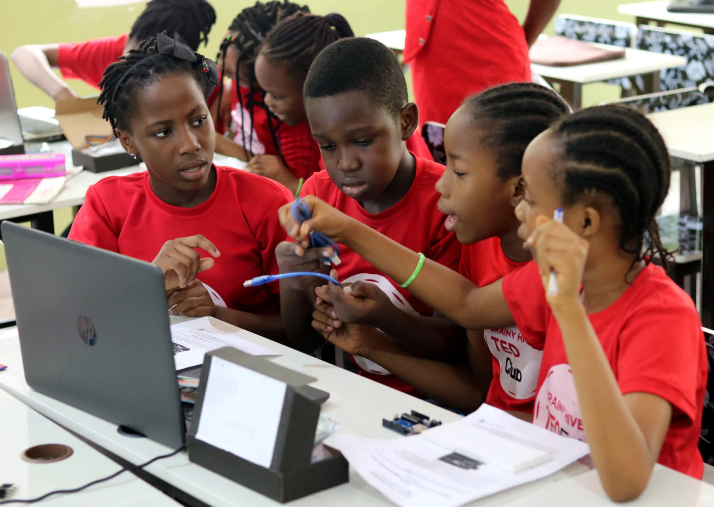
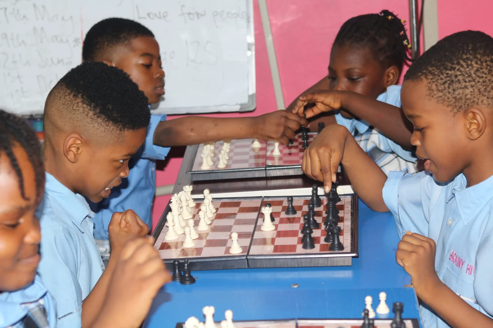
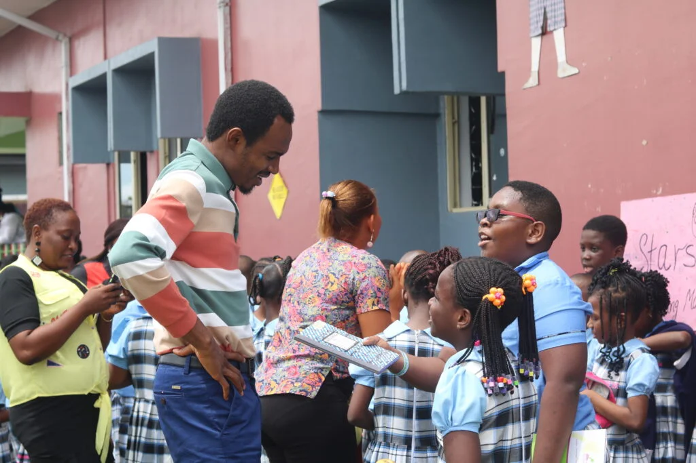
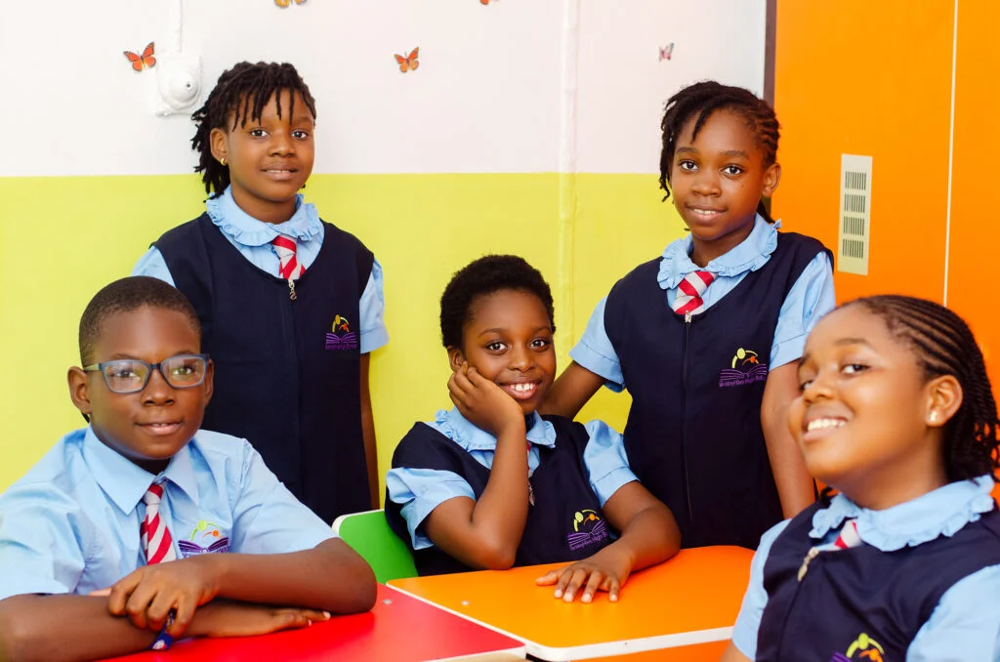
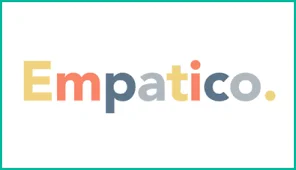
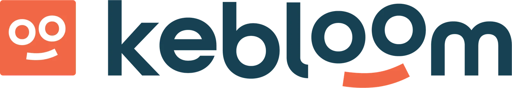
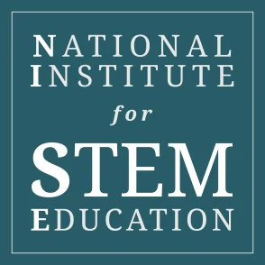
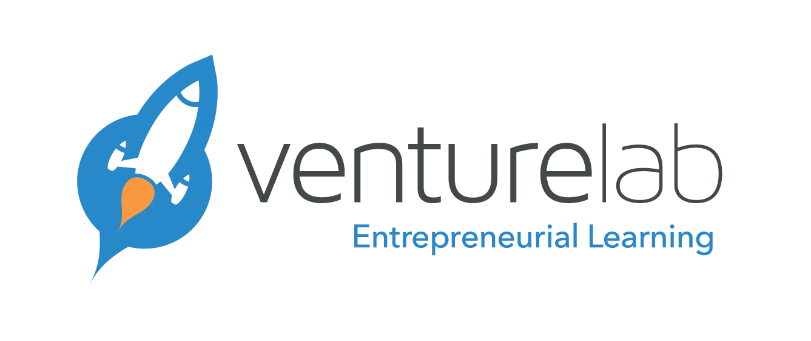

Educating Confident
Learners for A
Changing World.
Brainy Hive is a leading private school in Uyo offering academic excellence,
STEM education,
character
development, and a nurturing learning
environment for children from creche to high school.
- Trusted by 500+ parents across Uyo
- Experienced and certified teachers
- STEM, coding, AI & robotics integration
- Safe and nurturing learning environment

What Makes Brainy Hive Different: Setting the Standard for Education in Akwa Ibom.
At Brainy Hive Schools, widely recognized as the best schools in Uyo, we are driven by a profound understanding that the world is evolving at an unprecedented pace. Our core mission is to equip our students for enduring relevance and success in a future that is constantly being reshaped. We believe that true education transcends the mere accumulation of facts, focusing instead on cultivating adaptable, critical thinkers.
This distinctive philosophy sets us apart among top schools in Uyo. Our approach to learning is not about filling students with outdated information, but rather about nurturing their innate abilities to think innovatively, adapt swiftly to new challenges, collaborate effectively, and confidently navigate any change that life presents. As one of the premier private schools in Uyo, we champion a holistic and future-focused educational model. For us, education is more than just a business; it is a dedicated calling and a transformative mission to empower the next generation.
Why Brainy Hive Stands Out: Your
Child's Future, Our Priority
Choosing the right school is a vital decision for every parent. At Brainy Hive Schools, widely
regarded
as
the best schools in
Uyo, we provide a unique learning experience focused on holistic development
and
future
success. Here’s why we stand
among the top schools in Uyo.
Unwavering Focus on the Child
While parents entrust us with their children's education, our primary commitment is always to the child. Every decision, every program, and every interaction at Brainy Hive Schools is meticulously crafted to prioritize the individual needs and long-term well-being of our students. We are dedicated to making choices that foster their growth, even if it means challenging conventional approaches. This child-centric philosophy is a cornerstone of what makes us a leading private school in Uyo.
World-Class Educators
The caliber of a school is fundamentally defined by the excellence of its teaching staff. At Brainy Hive Schools, we pride ourselves on our team of world-class educators. Beyond academic qualifications, our teachers are passionate mentors, innovators, and lifelong learners who are deeply invested in preparing children for the complexities of tomorrow. We rigorously select and continuously train our faculty to ensure they are not just teaching subjects, but inspiring future leaders.

Commitment to Continuous Improvement
Education is a dynamic field, and what was effective yesterday may not suffice for the challenges of the future. As a forward-thinking institution among top schools in Uyo, Brainy Hive Schools is relentlessly committed to continuous improvement. We constantly review and refine our curriculum, teaching methodologies, and strategic approaches to guarantee that every child receives the most relevant, balanced, and future-ready education available.
Our Innovative Programs: Shaping
Future Leaders at the Best School in Uyo
At Brainy Hive Schools, we believe in nurturing well-rounded individuals equipped for a dynamic
future.
Our curriculum
extends beyond traditional academics, offering a suite of innovative programs
designed to
develop critical thinking,
creativity, and essential life skills.

Public Speaking: Empowering Confident Communicators
As a licensed TED-Ed School, we integrate the renowned TED Talks curriculum to cultivate exceptional public speaking skills. Communication is a cornerstone of success in any field, and our program ensures that every Brainy Hive student can articulate their ideas with confidence and clarity, preparing them to shine on any global stage.
More Details
STEM, Coding, AI & Robotics: Innovators of Tomorrow
In an increasingly technological world, proficiency in Science, Technology, Engineering, and Mathematics (STEM) is paramount. Our comprehensive STEM, Coding & Robotics program introduces students to foundational concepts from an early age. Coding is a classroom subject from First Grade, positioning our students to be leaders and innovators in their chosen careers.
More Details
Chess: Cultivating Strategic Minds
Beyond a game, Chess at Brainy Hive Schools is a powerful tool for developing strategic thinking, problem-solving, and foresight. Our structured curriculum teaches students to analyze situations, anticipate outcomes, and make informed decisions—skills invaluable for academic success and navigating a competitive world.
More DetailsDiscover the Full Spectrum of Our Programs
Ready to explore how Brainy Hive Schools provides an unparalleled educational journey? Click below to learn more about all our enriching programs, from creative arts to martial arts, and find the perfect fit for your child's potential.
Our School Sections: A Tailored Educational
Journey at the Best School in Uyo.
At Brainy Hive Schools, widely recognized as the best school in Uyo, we understand that each stage
of
a
child’s development requires a unique educational approach. We offer distinct school sections,
meticulously designed to provide age-appropriate learning
environments that foster growth,
curiosity,
and academic excellence. Our commitment to personalized education makes us one of the
top
schools in
Uyo
and a leading private school in Uyo.

Creche & Preschool: Nurturing Beginnings
Our Creche & Preschool provides a safe, stimulating, and loving environment for your youngest learners. Whether you're seeking reliable childcare while you focus on your career or the very best start to your child's educational journey, our program offers both. Many of our pupils begin their Brainy Hive experience as infants, a testament to the exceptional quality and trust parents place in our early years' education.
Schedule a School Tour
Grade School: Building Foundational Excellence
In our Grade School, we focus on helping each child discover their unique talents and passions. We provide a world-class foundation that equips them with essential knowledge and skills, preparing them to thrive in any path they choose. Our goal is to empower students to fit into any future they desire and to navigate life's challenges with confidence, making us a standout among private schools in Uyo.
Schedule a School Tour
High School: Cultivating Future Leaders
Our High School section is dedicated to developing the next generation of leaders who will shape and advance the world. We invest heavily in resources that promote academic rigor, cutting-edge STEM education, sports, arts, leadership development, and entrepreneurship. Students here are challenged to think critically, innovate, and become responsible global citizens, solidifying our reputation as a top school in Uyo.
Schedule a School Tour
The Butterfly Program: Inclusive Learning
Brainy Hive Schools is proud to offer the Butterfly Program, a specialized initiative designed to cater to children with unique learning needs and developmental disorders such as Autism, Down Syndrome, Speech Disorders, and Dyslexia. Our compassionate and expert team is dedicated to helping these children overcome challenges, fostering their potential, and enabling them to lead fulfilling lives without limitations.
Schedule a School TourExplore Our Educational Stages
Ready to find the perfect learning environment for your child? Click below to delve deeper into each of our school sections and discover how Brainy Hive Schools provides an unparalleled educational experience tailored to every age and stage.
TED-Ed EXPO
Read MoreParents Workshop: Resolving Sibling Rivalry
We hear and read many scary stories about how what began as...
Read MoreNewest Post
Our blog brings your updates and news from Brainy Hive.
Stay in touch to know everything that
happens here.
Memberships, Partnerships and
Affiliations
.webp)



